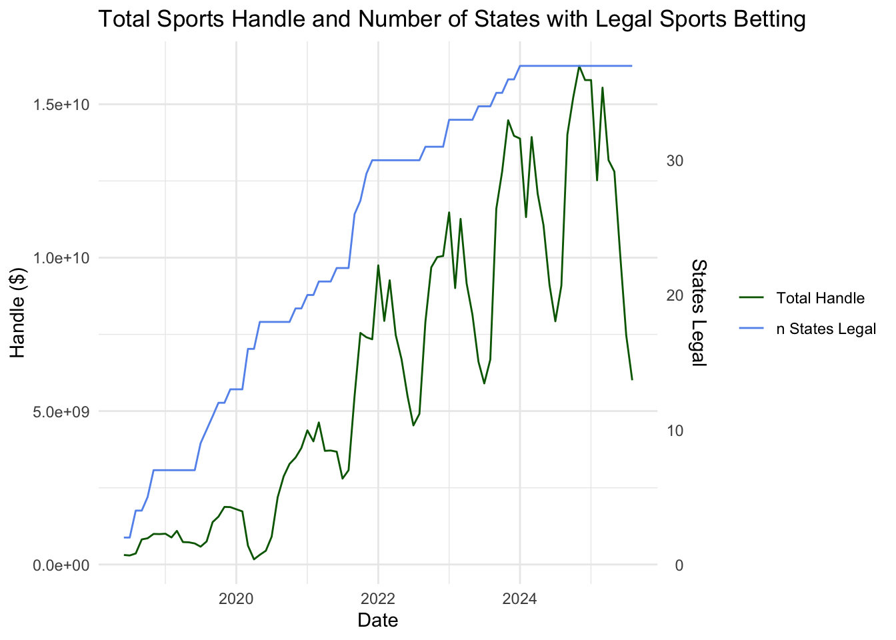
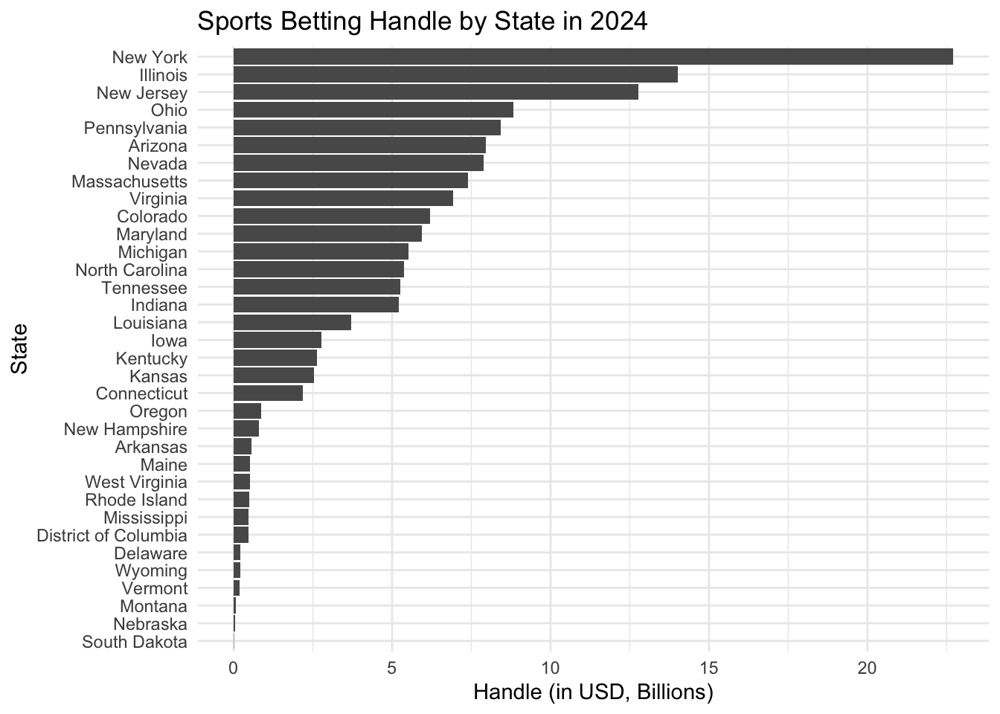

Exploratory Data Analysis
2025-12-02
Load packages and import cleaned dataframes.
knitr::opts_chunk$set(echo = TRUE, collapse = TRUE)
library(tidyverse)
library(haven)
library(lubridate)
library(here)
library(patchwork)
library(epitools)
library(ggcorrplot)
library(patchwork)
library(plotly)
source(here("source", "load_clean_brfss.R"))
source(here("source", "filter_brfss_data.R"))
source(here("source", "standardize_brfss_variable.R"))
source(here("source", "prop_test_functions.R"))
source(here("source", "run_fishers_test.R"))
brfss_data = load_clean_brfss(here("data", "brfss_clean_2017_2024.csv.zip"))
state_fips = read_csv(here("data", "legal_sports_report", "state_fips.csv"))
state_legal_dates = read_csv(here("data", "legal_sports_report", 'state_legalization_dates.csv'))
sb_rev_by_month = read_csv(here("data", "legal_sports_report", "sb_rev_by_month.csv"))
sb_rev_by_state_month = read_csv(here("data", "legal_sports_report",'sb_rev_by_state_month.csv'))
sb_rev_by_state = read_csv(here("data", "legal_sports_report", "sb_rev_by_state.csv"))
state_pop = read_csv(here("data", "state_population_census.csv"))
years_in_data = unique(year(pull(sb_rev_by_month, month)))
outcome_vars = c("any_physical_health_not_good_days", "any_mental_health_not_good_days", "has_depressive_disorder", "has_binge_drink")Sports Betting
Total Handle and Number of States with Legal Sports Betting
We begin our analysis by exploring trends in the sports betting industry itself and how these trends align with the growing number of states that legalized sports betting over time.
get_n_states_legal = function(input_month) {
n_states_legal = nrow(filter(state_legal_dates, first_start <= input_month))
}
sb_rev_by_month = sb_rev_by_month |>
mutate(
n_states_legal = sapply(month, get_n_states_legal)
)
scale_factor = max(pull(sb_rev_by_month,n_states_legal)) / max(pull(sb_rev_by_month,handle))
sb_rev_by_month |>
ggplot(aes(x = month)) +
geom_line(aes(y=handle, color="handle")) +
geom_line(aes(y=n_states_legal / scale_factor, color="legal")) +
scale_y_continuous(
name = "Handle ($)",
sec.axis = sec_axis(~ . * scale_factor, name="States Legal")
) +
#scale_color_(name = NULL) +
scale_color_discrete(name = NULL, labels = c("handle" = "Total Handle", "legal" = "n States Legal")) +
labs(
title = "Total Sports Handle and Number of States with Legal Sports Betting",
x = "Date"
) +
theme_minimal()
The plot shows handle going up with the number of states that have legalized sports betting. It also clearly shows strong cyclical trends in total handle, suggesting that the volume of betting is highly sensitive to the sports calendar.
Understanding Spikes in Sports Betting Handle
In addition to the BRFSS survey, we looked at sports betting data (Total Handle) to understand the cyclic nature of the betting market that could influence mental health outcomes. The purpose is to determine if the spikes in betting activity align with major sports seasons.
NFL Season
nfl_event_dates = tibble(
date = c(
ymd(paste(years_in_data, "09", "01", sep = "-")),
ymd(paste(years_in_data, "01", "01", sep = "-")),
ymd(paste(years_in_data, "02", "01", sep = "-"))
),
type = case_when(
month(date) == 2 ~ "Solid",
TRUE ~ "Dotted"
),
label = case_when(
month(date) == 9 ~ "Start of Season",
month(date) == 1 ~ "End of Season",
month(date) == 2 ~ "Super Bowl"
)
) |>
filter(date >= min(sb_rev_by_month$month), date <= max(sb_rev_by_month$month))
sb_rev_by_month |>
mutate(handle_B = handle / 1e9) |>
ggplot(aes(x = month, y = handle_B)) +
geom_line() +
ylab("Handle (in USD, Billions)") +
geom_vline(
data = nfl_event_dates,
aes(xintercept = date, linetype = type),
color = "#D50A0A",
show.legend = TRUE
) +
scale_linetype_manual(
name = "NFL Season",
values = c("Dotted" = "dotted", "Solid" = "solid"),
labels = c("Dotted" = "NFL Regular Season", "Solid" = "Super Bowl")
) +
theme(legend.position="bottom")
The largest peak in the betting handle clearly coincides with the NFL regular season in September, and a smaller dip aligns with the season’s end around the Super Bowl.
NCAA March Madness
ncaa_event_dates = tibble(
date = c(
ymd(paste(years_in_data, "03", "01", sep = "-"))
),
type = case_when(
month(date) == 3 ~ "Solid"
),
label = case_when(
month(date) == 3 ~ "March Madness"
)
) |>
filter(date >= min(sb_rev_by_month$month), date <= max(sb_rev_by_month$month))
sb_rev_by_month |>
mutate(handle_B = handle / 1e9) |>
ggplot(aes(x = month, y = handle_B)) +
geom_line() +
ylab("Handle (in USD, Billions)") +
geom_vline(
data = ncaa_event_dates,
aes(xintercept = date, linetype = type),
color = "#009CDE",
show.legend = TRUE
) +
scale_linetype_manual(
name = "NCAA Events",
values = c("Solid" = "solid"),
labels = c("Solid" = "March Madness")
) +
theme(legend.position="bottom")
A secondary peak in betting handle occurs during March Madness. This is important because it represents a period of intense, short-term betting interest.
Cumulative Handle by State
This code uses plotly, which doesn’t render to github document. There is a static image with no interactivity:
sb_rev_by_state = sb_rev_by_state |>
filter(market != "Total") |>
left_join(state_fips, join_by(market == state)) |>
left_join(
select(state_legal_dates, state, first_start, online, offline),
join_by(market == state)) |>
mutate(
legal_type = case_when(
!is.na(online) & !is.na(offline) ~ "both",
!is.na(offline) ~ "offline",
!is.na(online) ~"online"
)
) |>
mutate(
hover = paste("<b>",market,"</b>", '<br>',
"Handle: $", format(handle / 1000000000, digits = 2), "B", "<br>",
"Revenue: $", format(revenue / 100000000, digits = 2), "M", "<br>",
"Hold: ", hold, '%<br>',
"Taxes: ", format(taxes / 100000000, digits = 2), "M",
"<extra></extra>")
)
# give state boundaries a white border
l = list(color = toRGB("white"), width = 2)
# specify some map projection/options
g = list(
scope = 'usa',
projection = list(type = 'albers usa'),
showlakes = TRUE,
lakecolor = toRGB('white')
)
fig = plot_geo(sb_rev_by_state, locationmode = 'USA-states')
fig = fig |>
add_trace(
z = ~handle, hovertemplate = ~hover, #text = ~hover,
locations = ~abbr,
color = ~handle, colorscale="Viridis"
) |>
colorbar(title = "Millions USD") |>
layout(
title = 'Cumulative Handle by State', #<br>(Hover for breakdown)',
geo = g
)
figHandle by State in 2024
sb_rev_by_state_month |>
mutate(year = year(month)) |> # Extract year
group_by(state, year) |> # Group by year
summarize(
total_handle = sum(handle, na.rm = TRUE),
) |>
filter(year == 2024) |>
ungroup() |>
mutate(
state = fct_reorder(state, total_handle)
) |>
ggplot(aes(x=state, y= total_handle)) +
coord_flip() +
geom_bar(stat="identity") +
labs(
title = "Sports Betting Handle by State in 2024",
x = "State",
y = "Handle ($)"
) +
theme_minimal()
## `summarise()` has grouped output by 'state'. You can override using the
## `.groups` argument.
We can see New York has the highest handle which makes sense since it is the most populous state. We can get a sense of the popularity of sports gambling by looking at total handle per capita using US census data for total population by state.
Handle by State per Capita in 2024
sb_rev_by_state_month |>
mutate(year = year(month)) |>
group_by(state, year) |>
summarize(
total_handle = sum(handle, na.rm = TRUE),
) |>
filter(year == 2024) |>
ungroup() |>
left_join(select(state_pop, state, "2024"), by = "state") |>
rename(population_2024 = '2024') |>
mutate(
handle_per_capita = total_handle / population_2024,
state = fct_reorder(state, handle_per_capita)
) |>
ggplot(aes(x=state, y= handle_per_capita)) +
coord_flip() +
geom_bar(stat="identity") +
labs(
title = "Sports Betting Handle per Capita in 2024",
x = "State",
y = "Handle ($) per capita"
) +
theme_minimal()
## `summarise()` has grouped output by 'state'. You can override using the
## `.groups` argument.
We can see that Nevada and New Jersey have the highest handle per capita.
BRFSS
Data Completeness
One of our primary concerns with data was ensuring that the key outcome variables were reported consistently from 2017 to 2024.
all_outcome_vars = c("general_health", "general_health_refactored", "michd",
"physical_health", "physical_health_not_good_days", "leisure_physical_activity_last_30_days",
"mental_health", "mental_health_not_good_days", "poor_health", "depressive_disorder",
"difficulty_self_care", "life_satisfaction", "emotional_support", "loneliness", "binge_drink",
"heavy_drink", "lost_reduced_employment", "financial_strain_bills", "financial_strain_utilities")
summarize_outcome_by_year = function(outcome_var, df = brfss_data) {
outcome_sym = rlang::sym(outcome_var)
df |>
group_by(year(date), !!outcome_sym) |>
summarize(n = n(), .groups = "drop") |>
pivot_wider(
names_from = `year(date)`,
values_from = n
)
}
find_complete_years = function(outcome_var, summary_df){
outcome_sym = rlang::sym(outcome_var)
summary_df |>
filter(!is.na(!!outcome_sym)) |>
summarize(
across(
.cols = everything(),
.fns = ~ !all(is.na(.x))
)
)|>
select(-!!outcome_sym) |>
pivot_longer(
cols = everything(),
names_to = "year",
values_to = "is_complete"
) |>
summarize(
n_complete_years = sum(is_complete)
) |>
pull(n_complete_years)
}
complete_outcomes = tibble(
outcome = all_outcome_vars,
summary = map(all_outcome_vars, summarize_outcome_by_year),
n_complete_years = map2(all_outcome_vars, summary, find_complete_years)
) |>
arrange(n_complete_years) |>
filter(
n_complete_years == 8
) |>
pull(outcome)
setdiff(all_outcome_vars, complete_outcomes)
## [1] "life_satisfaction" "emotional_support"
## [3] "loneliness" "lost_reduced_employment"
## [5] "financial_strain_bills" "financial_strain_utilities"Some of the outcome variables we were interested in looking at like financial strain, were not available in all years. In order to maintain a robust analysis over time, we were limited to those variables that were available over all years. Our 4 primary outcomes are available over all years.
Distribution of Key Outcomes + Rationale for Binary Outcomes
brfss_data |>
filter(year(date) %in% c(2017, 2024)) |>
select(year = date, mental_health, physical_health) |>
mutate(
year = factor(year(year)),
mental_health = ifelse(mental_health > 30, 31, mental_health),
physical_health = ifelse(physical_health > 30, 31, physical_health)
) |>
pivot_longer(
cols = c(mental_health, physical_health),
names_to = "outcome",
values_to = "n_bad_days"
) |>
ggplot(aes(x = n_bad_days, fill = year)) +
geom_bar(position = "dodge") +
scale_x_continuous(breaks = c(0, 7, 14, 21, 31), labels = c(0, 7, 14, 21, 31)) +
facet_wrap(~outcome) +
labs(
title = "Distribution of Poor Health Days (2017 vs. 2024)",
x = "Number of Days of Poor Health (Past 30 Days)",
y = "Count of Respondents"
)
## Warning: Removed 27288 rows containing non-finite outside the scale range
## (`stat_count()`).
Given the concentration of responses at 0 days, we decided to use a
binary outcome variable like
any_physical_health_not_good_days as the outcome variable.
This also follows what Couture, et. al. used in their analysis. It also
simplified statistical tests that we decided to do later on.
Correlation Analysis
To understand relationships among the health outcome variables, we conducted a correlation analysis. Initially, we computed separate correlation matrices for males and females to assess whether the relationships among health outcomes differed meaningfully by sex. However, this stratification did not reveal significant differences, therefore, we analyzed correlations using the full sample.
#selecting variables
correlation_vars = c("general_health","general_health_refactored",
"mental_health", "mental_health_not_good_days",
"physical_health", "physical_health_not_good_days",
"poor_health", "depressive_disorder",
"difficulty_self_care", "michd",
"binge_drink", "heavy_drink",
"leisure_physical_activity_last_30_days")
brfss_all = brfss_data |>
select(all_of(correlation_vars)) |>
mutate_all(as.numeric)
cor(brfss_all,
method = "spearman",
use = "pairwise.complete.obs") |>
ggcorrplot(
type = "upper",
method = "square",
lab = TRUE,
lab_size = 2.5,
tl.cex = 10,
title = "Correlations"
) +
theme(plot.title = element_text(hjust = 0.5))
The correlation matrix revealed redundancy with pairs of variables,
e.g., mental_health
vs. mental_health_not_good_days (r = 0.99). Including both
variables in regression models would introduce multicollinearity, so one
variable from each pair was selected.
We can see that depressive_disorder showed the strongest
positive correlation with mental_health(r = 0.44).
poor_health showed a similar pattern correlating the
strongest with physical_health (r = 0.43). These trends may
reflect how individuals reporting depressive symptoms or more days where
poor health negatively impacted usual activities also tend to report
more poor physical and mental health days.
On the other hand, heavy_drink and
binge_drink showed weak correlations with most other health
outcomes.
Note: BRFSS contains a variable general_health which is
a Likert scale from 1-6 with 1 being “Good Health” and 6 being “Poor
Health.” There is also a general_health_refactored column
with 1 being “Good Health” and 2 being “Poor Health.”
general_health_refactored shows negative correlations with
variables like physical_health and
mental_health. As general health gets better (lower score),
the number of bad health days goes up. This is an unexpected result. We
can see that general_health has little correlation between
most other health outcomes, which was surprising. We may be seeing these
trends since general_health_refactored has fewer, more
broadly defined categories. The more narrowly defined
general_health shows minimal correlation. If we were to do
future analyses, we would want to use the narrowly defined variable
general_health.
Distribution of Primary Health Outcomes by Demographic Variables
We explored how our primary health outcomes were distributed across
demographic and socioeconomic groups. We used
mental_health_not_good_days,
physical_health_not_good_days,
depressive_disorder, and binge_drink based on
the consistent availability of these health outcomes across
2017-2024.
We used stacked bar plots to visualize these distributions with each bar representing a demographic category, and the bar divided into segments to show the proportion of individuals falling into each health outcome.
To efficiently visualize the distribution of these health outcome across any demographic variable, we constructed a set of plotting functions for each outcome. Here are some notable findings:
#Bad mental health days outcome
plot_mental_health = function(demo_var, plot_title) {
brfss_data |>
filter(
!is.na(.data[[demo_var]]),
!is.na(mental_health_not_good_days)
) |>
ggplot(aes(x = .data[[demo_var]], fill = mental_health_not_good_days)) +
geom_bar(position = "fill") +
scale_fill_manual(
values = c(
"0" = "darkolivegreen2",
"1-13" = "yellow2",
"14+" = "brown2"
),
name = "# of Bad Mental Health Days"
) +
labs(
x = demo_var,
y = "Proportion",
title = plot_title
) +
theme_minimal() +
theme(axis.text.x = element_text(angle = 45, hjust = 1))
}
#Bad physical health days outcome
plot_physical_health = function(brfss_data, demo_var, plot_title) {
brfss_data |>
drop_na(physical_health_not_good_days) |>
drop_na(.data[[demo_var]]) |>
ggplot(aes(x = .data[[demo_var]], fill = physical_health_not_good_days)) +
geom_bar(position = "fill") +
scale_fill_manual(
values = c(
"0" = "darkolivegreen2",
"1-13" = "yellow2",
"14+" = "brown2"
),
name = "# of Bad Physical Health Days"
) +
labs(
x = demo_var,
y = "Proportion",
title = plot_title
) +
theme_minimal() +
theme(axis.text.x = element_text(angle = 45, hjust = 1))
}
#Depressive disorder outcome
plot_depression = function(demo_var, plot_title) {
brfss_data |>
mutate(
income_level = factor(
income_level,
levels = c(
"Less than $10,000",
"$10,000 to < $15,000",
"$15,000 to < $20,000",
"$20,000 to < $25,000",
"$25,000 to < $35,000",
"$35,000 to < $50,000",
"$50,000 to < $75,000",
"$75,000 or more")
)
) |>
drop_na(depressive_disorder) |>
drop_na(.data[[demo_var]]) |>
ggplot(aes(x = .data[[demo_var]], fill = depressive_disorder)) +
geom_bar(position = "fill") +
scale_fill_manual(
values = c(
"No" = "steelblue2",
"Yes" = "red4"
),
name = "Depressive Disorder"
) +
labs(
x = demo_var,
y = "Proportion",
title = plot_title
) +
theme_minimal() +
theme(axis.text.x = element_text(angle = 45, hjust = 1))
}
#Binge drinker outcome
plot_bingedrink = function(demo_var, plot_title) {
brfss_data |>
drop_na(binge_drink) |>
drop_na(.data[[demo_var]]) |>
ggplot(aes(x = .data[[demo_var]], fill = binge_drink)) +
geom_bar(position = "fill") +
scale_fill_manual(
values = c(
"No" = "steelblue2",
"Yes" = "red4"
),
name = "Binge Drinker"
) +
labs(
x = demo_var,
y = "Proportion",
title = plot_title
) +
theme_minimal() +
theme(axis.text.x = element_text(angle = 45, hjust = 1))
}Distribution of Bad Mental Health Days by Age Group:
brfss_data |>
filter(
!is.na(age_group_5yr),
!is.na(mental_health_not_good_days)
) |>
ggplot(aes(x = age_group_5yr, fill = mental_health_not_good_days)) +
geom_bar(position = "fill") +
scale_fill_manual(
values = c(
"0" = "darkolivegreen2",
"1-13" = "yellow2",
"14+" = "brown2"
),
name = "# of Bad Mental Health Days"
) +
labs(
x = "Age Group",
y = "Proportion",
title = "Distribution of Bad Mental Health Days by Age Group"
) +
theme_minimal() +
theme(axis.text.x = element_text(angle = 45, hjust = 1))
The 18-24 and 25-29 age groups have the largest proportion of individuals reporting 1-13 and 14+ bad mental health days. Younger adults report the highest frequency of bad mental health days, while older adults report the lowest.
Distribution of Bad Physical Health Days by Sex
brfss_data |>
drop_na(physical_health_not_good_days) |>
drop_na(sex) |>
ggplot(aes(x = sex, fill = physical_health_not_good_days)) +
geom_bar(position = "fill") +
scale_fill_manual(
values = c(
"0" = "darkolivegreen2",
"1-13" = "yellow2",
"14+" = "brown2"
),
name = "# of Bad Physical Health Days"
) +
labs(
x = "Sex",
y = "Proportion",
title = "Distribution of Bad Physical Health Days By Sex"
) +
theme_minimal() +
theme(axis.text.x = element_text(angle = 45, hjust = 1))
We can see that overall distributions are very similar across males and females. The proportion reporting 14+ days is relatively small and nearly identical between sexes. The similarity in patterns can show that sex differences are unlikely to significantly confound associations unless interacting with age or other factors.
Distribution of Depressive Order by Income Level
brfss_data |>
mutate(
income_level = factor(
income_level,
levels = c(
"Less than $10,000",
"$10,000 to < $15,000",
"$15,000 to < $20,000",
"$20,000 to < $25,000",
"$25,000 to < $35,000",
"$35,000 to < $50,000",
"$50,000 to < $75,000",
"$75,000 or more")
)
) |>
drop_na(depressive_disorder) |>
drop_na(income_level) |>
ggplot(aes(x = income_level, fill = depressive_disorder)) +
geom_bar(position = "fill") +
scale_fill_manual(
values = c(
"No" = "steelblue2",
"Yes" = "red4"
),
name = "Depressive Disorder"
) +
labs(
x = "Income Level",
y = "Proportion",
title = "Distribution of Depressive Order by Income Level"
) +
theme_minimal() +
theme(axis.text.x = element_text(angle = 45, hjust = 1))
The lowest-income groups (less than $10,000 and $10,000 to <$15,000) have the highest proportions of individuals reporting a depressive disorder. As income decreases, the proportion of respondents with depressive disorder increases.
Distribution of Binge drinking by Age Group
brfss_data |>
drop_na(binge_drink) |>
drop_na(age_group_5yr) |>
ggplot(aes(x = age_group_5yr, fill = binge_drink)) +
geom_bar(position = "fill") +
scale_fill_manual(
values = c(
"No" = "steelblue2",
"Yes" = "red4"
),
name = "Binge Drinker"
) +
labs(
x = "Age Group",
y = "Proportion",
title = "Distribution of Binge Drinkers by Age Group"
) +
theme_minimal() +
theme(axis.text.x = element_text(angle = 45, hjust = 1))
We can see that binge drinking is most common among younger adults with the peak in the 25-29 age group. It steadily declines as age increases.